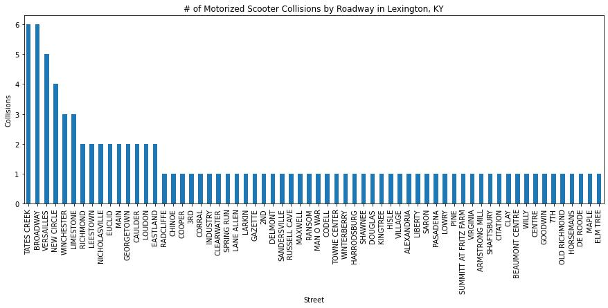
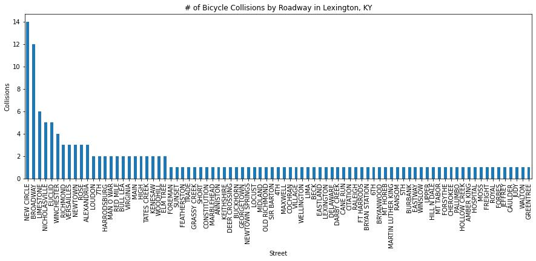
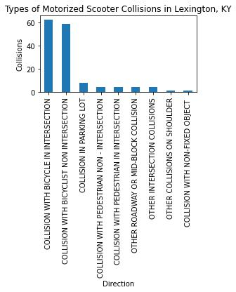

The recent proliferation of electronically charged scooter rentals in metropolitan areas nationwide has become an increasing concern since 2017. Many e-scooter companies have come into the market in recent years. E-scooter brands such as Lime, Bird, and others, often litter the streets with with e-scooters outfitted with GPS tracking devices and can zoom down sidewalks around 15 mph (25 kph). Users can track the scooters and pay on a credit card machine attached to the handlebars of the unit. This has caused an increase in police reports taken in relation to injuries caused by or involved with e-scooters.
Above, purple lines indicate roads with high densities of accidents for both scooters and bicycles. Click on the layers tab on the right to view more about e-scooter and bicycle injuries directly. A hexagonal grid was created for both e-scooter and bicycle injuries to better understand where the density of these reports take place. Downtown seems to be a hot spot for sure. Feel free to click on individual points to learn more about the details of the police report individually.
Since 2018, the city of Lexington in Fayette County, KY granted E-scooter companies to market to the city and offer these scooters countywide. Lime and Bird contract employees often pick up these scooters when GPS tracking devices signal that their battery is low. After much campaigning, cities such as Lexington often grant these companies with permissions to operate. Based on the assumption that some form of job creation is derived as well as taxes on rides, many of these companies are often viewed in a positive light and operate in many populated places nationwide.
This has gotten me to wonder - how do e-scooter injuries compare with bicycyle injuries? And even more, how do e-scooter injury reports shape up next to those for bicycles? Due to the recent onset of e-scooter companies, making these types of comparisons become all the more important.
After contacting the Lexington Police Department, I was able to collect data and represent the point locations where police reports were filed related to e-scooters and bicycle injuries independently. It's necesarry to take note that these point locations are aggregated to the nearest intersection. Sometimes, accidents took place at intersections, but in order to protect the privacy of homes and involved parties, the majority of points locations are relative to nearest intersections. This doesn't change the fact that these point locations don't have some sort of geographic value. For example, if we look at a chart comprising the density of e-scooter incidents, we can see that they occur most often along Tates Creek, Broadway, and Versailles Road primarily. 
On the other hand, I've found that bicycle injuries are more common on New Circle than Tates Creek, but Broadway has the same amount of injuries from both since 2018. All of the highest injury-prone streets in Lexington share something in common - they're all over 55 mph zones. We can quickly determine that faster roads are much more dangerous than some other factor such as one way streets and perhaps busy intersections. 
More should be done to look into the relationship between bicycle and e-scooter injury reports. Other factors that were found include that most injuries occur on clear sunny days, hit and runs make up 1/3 of all reported bicycle injuries, and interestingly enough, the vast majority of motorized scooter injury reports are involved with a bicycle at an intersection or non intersection. In other words, hardly any cars are involved with e-scooter injuries. This should be noted for any cyclists in the city aware of the danger that e-scooters impose. 
Perhaps e-scooter companies are working to find solutions to this issue, but for now, we can only look more into the situation and see where e-scooter and bicycle injuries overlap or differ.
Data for this map was provided by the Lexington KY Police Department